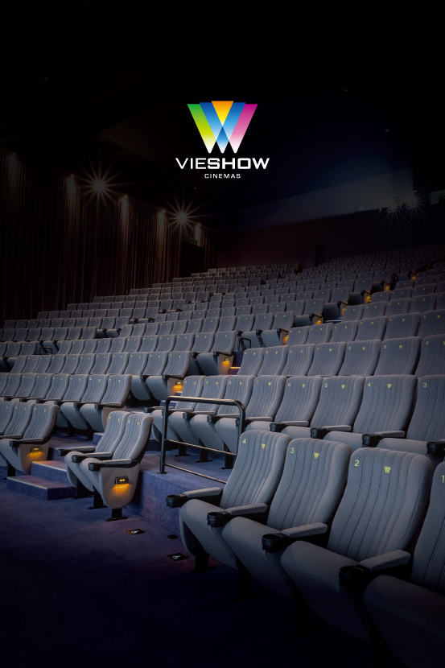
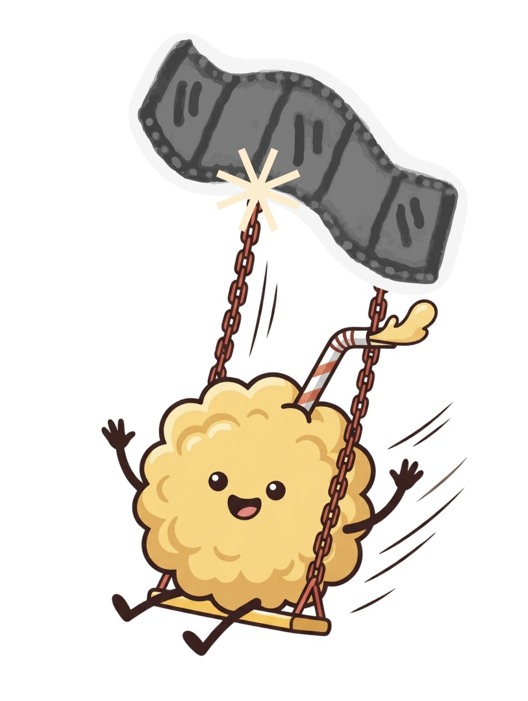

An AI-powered cinema chatbot designed to act as a warm, movie-loving companion rather than a rigid customer service agent.

POPI is an interactive cinema service chatbot designed for VIESHOW Cinemas. By combining a distinct character persona with conversational assistance, POPI delivers an engaging customer support experience. Through real-time cinema information and friendly guidance, the chatbot helps users seamlessly navigate their entire moviegoing journey — from discovering showtimes to exploring in-theater amenities.
The chatbot character is inspired by the most iconic symbol of the moviegoing experience — popcorn. By transforming this familiar cinema symbol into a friendly mascot, POPI establishes an immediate connection with users.
To reinforce its identity, POPI was developed with a clear character persona:

Browse current releases, discover premium screening formats (such as IMAX, 4DX, and TITAN), and receive personalized recommendations.
Check screening schedules by date and location, filtering options based on user preferences.
Understand various ticket types, pricing structures, and get instant answers to common ticketing FAQs.
Explore popcorn flavors, combo meals, beverages, and learn about available cinema facilities.
To ensure users receive accurate, up-to-date details, POPI is connected directly to VIESHOW's official database through API integration.
Instead of relying on static, predefined responses, the chatbot retrieves information dynamically in real time. This technical architecture enables POPI to fetch current movie schedules, fluctuating seat availability, cinema locations, and active promotions with precision, ensuring that the conversational experience is always reliable and contextually relevant.

During user testing, users easily got stuck in endless loops when typing ambiguous commands. We resolved this by implementing a global fallback intent handler and adding persistent, context-aware quick-reply buttons to easily reset the flow.
Early iterations of POPI were overly conversational, creating chat fatigue for users just wanting to buy tickets quickly. We iterated by pruning conversation dialogue lengths and using card UI elements for showtime selection instead of purely text-based listings.
Designing digital services around AI chatbots often risks turning helpful dialogue into standard decision trees. POPI demonstrates that injecting playful characteristics increases patience, makes UI layouts feel organic, and leads to greater user satisfaction.
User testing revealed that users are much more willing to explore cinema products (like premium snacks or VIP seats) when the prompt is presented by a mascot in a friendly, conversational way, rather than via static check-boxes.